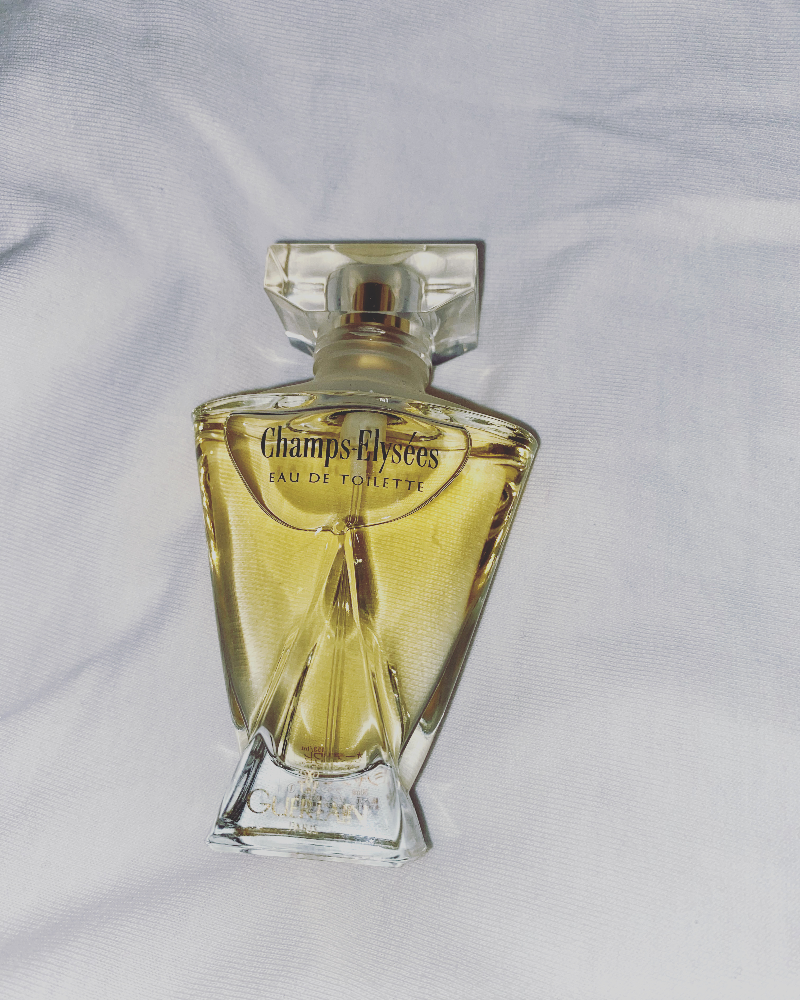
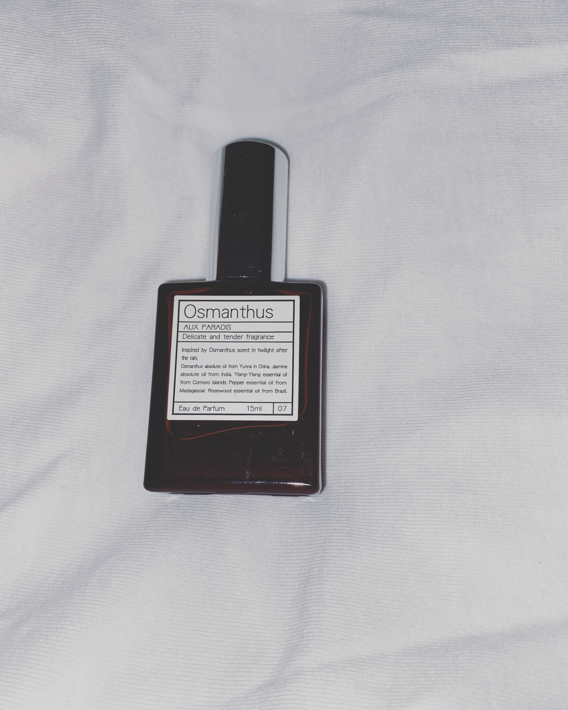
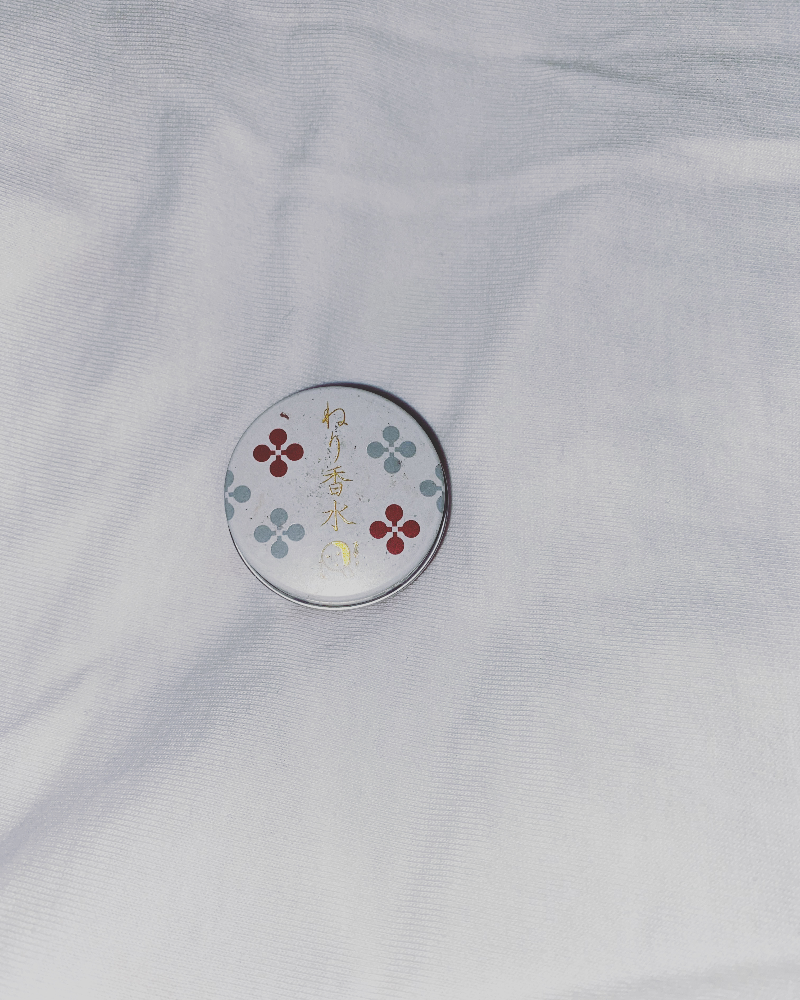
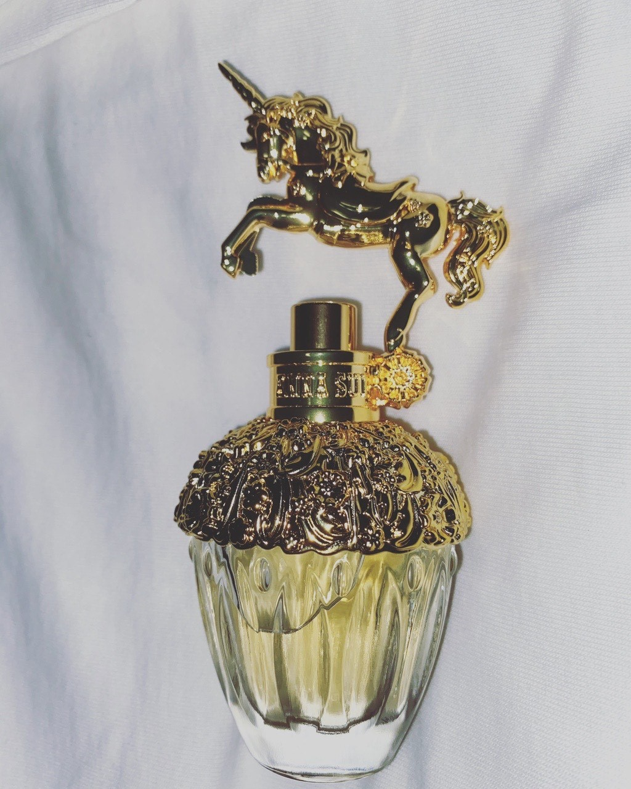
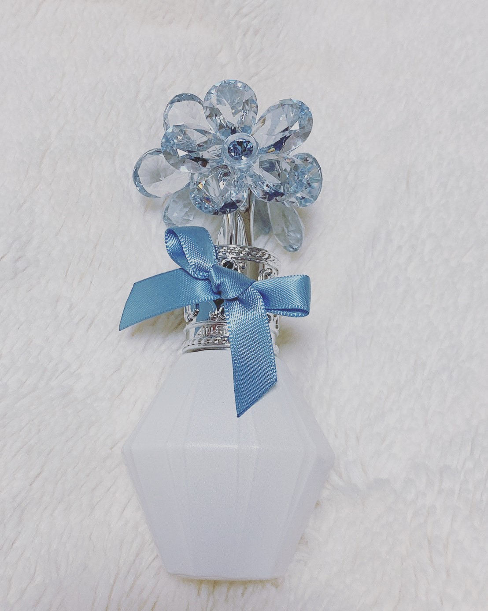

PERFUME OIL MOON SPIRIT THE BODY SHOP
香水 オイルタイプ ムーンスピリット ボディーショップ
量：30ml 値段：4000円+税 廃盤(一部店舗で取扱い有り)
ムーンフラワーの香りを凝縮した贅沢なパルファムオイルです。
ニカラグアからコミュニティトレードで調達したセサミオイルとサンフラワーオイルに、ムーンフラワーのフレグランスをブレンドしました。
セサミオイルとサンフラワーオイルには優れた保湿効果とエモリエント効果があり、肌をしっとり滑らかに整えます。
引用元：@cosme
つけた瞬間、まるで本物の薔薇の香りが香ります。自然な香りで、どこか落ち着くような優しい香りです。自分が薔薇の花を持ち歩いているような気分になります。
付け心地もよく、オイルなのにとてもサラサラしています。冬では塗った部分は潤います。主観的には夏らしい香りではないのですが、夏でも全く気になりません。
匂いもちもよく、耳の裏につけておけば、ふわっと香ります。
MITSOUKO GUERLAIN
ミツコ ゲラン 香水
量：7,5ml 値段：43,200円 オンラインで販売中
日本ブーム真っただ中のヨーロッパで、小説「ラ・バタイユ」のヒロインの日本女性の名前を名付けました。
慎ましやかでミステリアスな表情の中に、強い意志を秘めた香りです。
引用元： GUERLAINホームページ
つけた瞬間、どこかお香を感じる、懐かしい香りが広がります。
力強さの中に、華やかさとしなやかさを感じる香水です。
説明文通りの香りです。
当時のヨーロッパの人々の日本人にに対するイメージが子の香りをかいでいると何となくわかってきます。
つけたてははっきりと香りますが、時間がたつにつれ、優しい香りになります。
CHAMPS`ELYSE`ES GUERLAIN
オーデトワレシャンゼリゼ ゲラン 香水
量：30ml 値段：19,440円 オンラインで販売中

世界で最も名高いパリの大通りをモチーフに創作された香りです。
人生の喜びと、永遠の愛に捧げられたフレッシュな花々の調べ。
フレッシュフローラルの香りです。
引用元： GUERLAINホームページ
つけた瞬間、甘い花の香りが広がります。
女性らしい、甘さの中に、何か大人びた部分を感じることができる、大人っぽい香水です。
持続性も高く、時間がたつにつれ、また違った香りを楽しむことができます。
シャンデリゼに行ったことがなくても、シャンデリゼの雰囲気が容易に想像することができます。
Osmanthus AUX PARADIS
オスマンス オゥパラディ 香水
量：15ml 値段：2,860円 秋限定

どこからともなく漂うノスタルジックな金木犀のぬくもりを感じる甘い芳醇。
短い期間で散ってしまう花はいち早く冬を告げるやさしさに満ちた金色の雪。
金木犀のほのかに甘い優しい香りです。
引用元： Osmanthusホームページ
私は金木犀の花が大好きで、いろいろな金木犀の香水を試してきました。
その中で、最も金木犀の花を表現できている香水だと思います。
付けたとたん、甘い金木犀の香りが広がります。
秋になれば、短い期間のみ楽しむことができる金木犀の香りが、優しく香ります。
ワンプッシュでは足りないかと思います。
持続性はあまりないのですが、まるで本物の金木犀の香りがします。
フルーティーフローラル よーじや
フルーティーフローラル よーじや
量：10g 値段：1620円

フルーティーフローラルの香りの練り香水。
フレッシュ、ピーチなどの上品な甘さのトップから、スズランなどの優雅なフローラルのミドルへ。
ラストはセダーやムスクが優しく香ります。
香料以外はすべて天然由来で、アルコールもフリーです。
引用元：よーじやホームページ
つけた瞬間まろやかな花の香りが広がります。
透き通る、フレッシュというよりかは、鼻につくような柔らかい香りです。
よーじやから出た商品であるため、天然由来成分で肌にも優しい商品です。
練香水だからか、持続性はあまりよくないですが、本当に香りがよいです。
FANTASIA ANNA SUI
ファンタジア アナスイ
量：30ml 値段：6,264円 オンライン、店舗で販売中

ウッディ フルーティー フロラールの香りです。
アナスイが、偶然街で出会ったメリーゴーランドのユニコーンがモチーフとなっています。
引用元：ANNA SUIホームページ
つけた瞬間、甘い花の香りが広がります。
その中にも、どこかすっきりとした香りも隠されています。
つけたてははっきりと香りますが、時間がたつにつれ、落ち着いた香りになります。
そして何より、見た目の可愛さです。
上にユニコーンが乗っていて、つけるだけでなく、鑑賞するにも、自分を女の子にさせてくれるような見た目と香りです。
WHITE LILY SHIRO
ホワイトリリー シロ
量:12g 値段：3,024円 オンライン、店舗で販売中
ベースに、ガーナ直輸入の未精製シアバターを配合し、こう保湿の潤いをプラスしました。
ふわっと香るナッツのような香りは未精製ならではの素材そのものの香りです。
洗練されたフローラルをまとう、すっきりと清潔感アル香りです。
ポーチに入れてもかさばらないので、簡単に香りのお色直しができます。
引用元： SHIROホームページ
つけたとたん、柔らかい、花の香りが広がります。
一番人気の香りだけあり、とても柔らかい優しい香りがします。
嗅いでいて、どこか安心するような香りです。
練り香水のため、持続性はあまりないですが、保湿としても使えるのでとても便利です。
Crystal bloom something pure blue eau de parfum JILL STUART
クリスタルブルーム サムシングピュアブルー オールドパルファン ジルスチュアート
量：30ml 値段：5,940円 オンライン、店舗で販売中

ウエディングヴェールのやわらかな透明感とともに香り立つ、この世で最も幸福感あふれる、純粋な香りです。
華やかなウェディングと幸福感をイメージしたボトルです。
引用元：JILL STUARTホームページ
付けたとたん、甘い華やかな香りがします。
とても甘い香りなのですが、ずっと香っていても嫌にならないとてもかわいい香りがします。
ジルなだけあって、見た目もかわいく、香りもかわいくなれます。